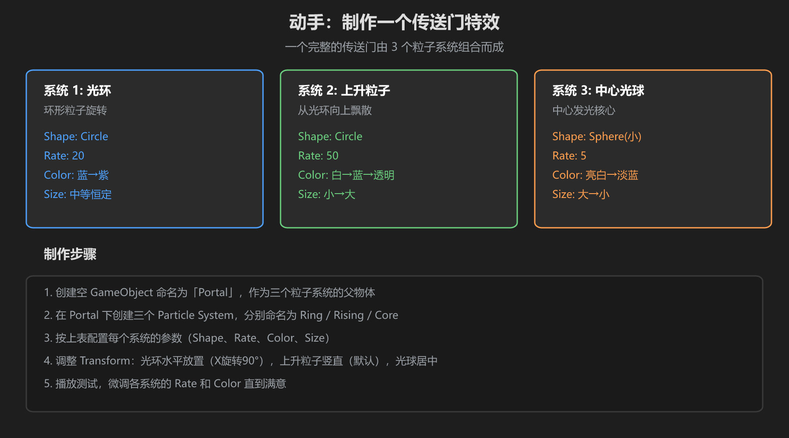
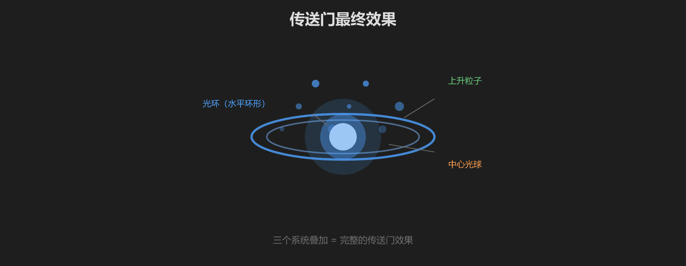

第 5 篇：动手做一个传送门特效
这是实战篇。我们把前面学的所有知识组合起来，做一个完整的传送门特效。传送门由 3 个粒子系统 叠加而成。
1. 传送门由哪三部分组成

图：传送门由光环、上升粒子、中心光球三个系统叠加而成
| 系统 | 作用 | Shape | 视觉效果 |
|---|---|---|---|
| 1. 光环 (Ring) | 水平旋转的环形粒子，构成传送门的「门框」 | Circle | 蓝色光环在水平面上旋转 |
| 2. 上升粒子 (Rising) | 从光环位置向上飘散的粒子 | Circle | 白蓝色粒子向上飘动，逐渐消失 |
| 3. 中心光球 (Core) | 传送门中心的发光核心 | Sphere（小） | 亮白色光球，散发光芒 |
2. 第一步：创建父物体
- 在 Hierarchy 中右键 → Create Empty
- 命名为 「Portal」
- Position 设为 (0, 1, 0) — 放在离地 1 米的位置
三个粒子系统都将作为 Portal 的子物体，这样移动 Portal 就能整体移动整个传送门。
3. 第二步：制作光环 (Ring)
- 在 Portal 下右键 → Effects → Particle System，命名为「Ring」
- Transform：Rotation X = -90（让光环水平放置）
- Main 模块：
- Duration = 5，Looping = ✓
- Start Lifetime = 2
- Start Speed = 0（光环不飞走，在原地旋转）
- Start Size = 0.5
- Start Color = 蓝色 (#4ea1ff)
- Emission：Rate over Time = 20
- Shape：选 Circle，Radius = 1.5，Arc = 360
- Color over Lifetime：渐变：蓝色 → 浅蓝 → 透明
- Size over Lifetime：曲线从 1 降到 0.2
- Renderer：Material 选 Particles/Additive（发光感）
4. 第三步：制作上升粒子 (Rising)
- 在 Portal 下右键 → Effects → Particle System，命名为「Rising」
- Main 模块：
- Duration = 5，Looping = ✓
- Start Lifetime = 1.5
- Start Speed = 1.5（向上飘）
- Start Size = 0.3
- Start Color = 白色
- Emission：Rate over Time = 50
- Shape：选 Circle，Radius = 1.2
- Velocity over Lifetime：勾选，Linear Y = 2（加速上升）
- Color over Lifetime：渐变：白色 → 浅蓝 → 透明
- Size over Lifetime：曲线从 1 升到 1.5 再降到 0（先变大再变小）
- Renderer：Material 选 Particles/Additive
5. 第四步：制作中心光球 (Core)
- 在 Portal 下右键 → Effects → Particle System，命名为「Core」
- Main 模块：
- Duration = 5，Looping = ✓
- Start Lifetime = 0.8
- Start Speed = 0（不移动）
- Start Size = 1.5
- Start Color = 亮白色
- Emission：Rate over Time = 8
- Shape：选 Sphere，Radius = 0.3
- Color over Lifetime：渐变：亮白 → 淡蓝 → 透明
- Size over Lifetime：曲线从 1.5 降到 0.5（慢慢缩小）
- Renderer：Material 选 Particles/Additive
6. 最终效果

图：三个系统叠加后的传送门效果示意
点 Play 后你应该看到一个蓝色的光环在水平面上，白色粒子从光环位置向上飘散，中心有一个明亮的发光球体。这就是一个完整的传送门特效！
7. 调整和个性化
做出来之后，你可以调整这些参数来改变风格：
| 想要的效果 | 调什么 |
|---|---|
| 更大的传送门 | 增大 Ring 的 Shape Radius，增大 Core 的 Start Size |
| 更快的旋转感 | 增大 Ring 的 Start Speed（给一点速度让粒子沿环移动） |
| 更多粒子 | 增大各系统的 Rate over Time（注意性能） |
| 红色/紫色传送门 | 修改各系统的 Start Color 和 Color over Lifetime 渐变 |
| 更华丽 | 再添加一个系统，用 Cone Shape 做向外扩散的光线 |
扩展思路：把这个传送门放在 VRChat 世界中，用 UdonSharp 脚本控制它的 Play/Stop，再加上一个传送触发区域，就是一个完整的可交互传送门！
学前检查清单
- 创建了 Portal 父物体和三个子粒子系统
- 光环水平放置，上升粒子向上飘散
- 中心光球有发光核心效果
- 三个系统都使用了 Additive 材质
- 整体效果看起来像一个传送门